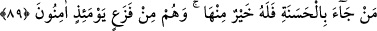
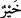
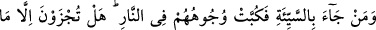
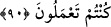
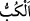

89. Kim iyilikle (ilâhî huzura) gelirse, ona daha iyisi verilir. Ve onlar o gün
korkudan emin kalırlar.
Sizden “Kim iyilikle” kelime-i şehâdet ve ihlâsla “(ilâhî huzura) gelirse, ona daha
iyisi” onun cihetinden ve onun için hâsıl olan fayda ve sevab, yâni cennet “verilir.”
Çünkü kelime-i şehâdet ve ihlâs, mutlak iyiliktir ve iyiliklerin en güzelidir. Bu durumda
“
” kelimesi, tafdilsiz isimdir. Çünkü “Lâ ilâhe illallah” sözünden daha hayırlı bir şey
yoktur.
“İyilik”le kelime-i şehadetin dışındaki tâatlar kasdedilirse, tafdîl (daha hayırlı)
mânâsına olması da câiz olur. O zaman mânâ şöyledir: ‘onun için ondan daha hayırlı/iyi
karşılık vardır/verilir.’ Çünkü o kimseye değersize karşılık şerefli, fânîye karşılık bâkî
ve bire karşılık on, hatta yedi yüz verilir.
“Ve onlar” yâni iyilikle gelenler “o gün” sûra üfürüldüğü gün/zaman derecesi
ölçülemeyecek çok şiddetli “korkudan emin kalırlar.” Bu müthiş korku onlara ulaşmaz
ve zararı da onlara dokunmaz.
Bu korku, muhâsebenin tamam olmasından, iyilik ve kötülüklerin ortaya çıkmasından
sonra azâbı görmekten dolayı hâsıl olan şiddetli korkudur. “En büyük dehşet dahi
onları tasalandırmaz.” (el-Enbiyâ, 21/103) âyetinde bahsedilen korku budur.
Hasan Basrî’den rivâyete göre bu korku kulun cehenneme atılması emredildiğinde
meydana gelen korkudur.
İbn Cüreyc de der ki: “Bu korku, ölüm boğazlanıp: “Ey cennet ehli, artık ölüm yok,
ebedîsiniz. Ey cehennem ehli, artık ölüm yok, siz de ebedisiniz.” denildiği zamandır.”
Allah’ın istisna ettiklerinin dışında göklerde ve yerde bulunan herkese ârız olacak
korkuya gelince; bu sûra üfürülmesinin başında şiddetli ve korkunç halleri görmekten
kaynaklanan bir korku ve dehşettir. Her ne kadar kendisine bir zarar ulaşmasından emin
olsa da yaratılış gereği neredeyse hiç kimse bu korkudan hâlî/uzak olmayacaktır.
90. (Rablerinin huzuruna) kötülükle gelen kimseler ise yüzükoyun cehenneme
atılırlar. (Onlara) “Ancak yaptıklarınızın karşılığını görmektesiniz!” (denir).
“(Rablerinin huzuruna) kötülükle” yâni kötülüklerin en kötüsü olan şirk ile “gelen
kimseler ise yüzükoyun cehenneme atılırlar.” “
” bir şeyi yüzükoyun
atmak/düşürmek demektir. Yâni onlar yüzüstü, boyunları önlerine eğilmiş olarak
cehenneme fırlatılıp atılırlar.